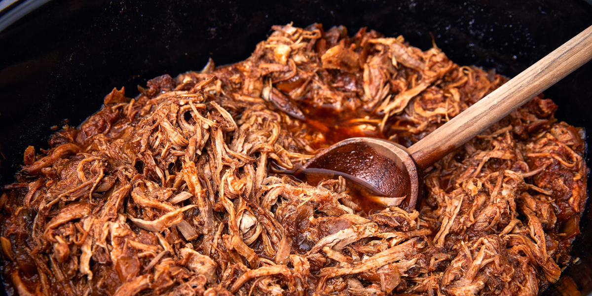

Pulled pork

Owen baked Pulled Pork
Recipe:
- Preheat oven to 300°
- In a small bowl, combine salt, paprika powder, garlic powder, onion powder, and then season with black pepper. Rub all over pork.
- In a large Dutch oven over medium high heat, heat oil. Working in batches, add pork and sear on all sides.
- Pour beer around pork and cover with lid. Transfer to oven and cook until pork is beginning to turn tender, about 3 hours.
Remove lid and cook until pork is very tender and pulls apart easily with a fork, 1 to 2 hours more.
- Remove pork from Dutch oven and let rest while you prepare barbecue sauce.
Ingredients:
- 4 lb. boneless pork shoulder
- 1 tbsp. kosher salt
- 1 tbsp. paprika powder
- 1 tsp. garlic powder
- 1 tsp. onion powder
- black pepper
- 12 oz. lager